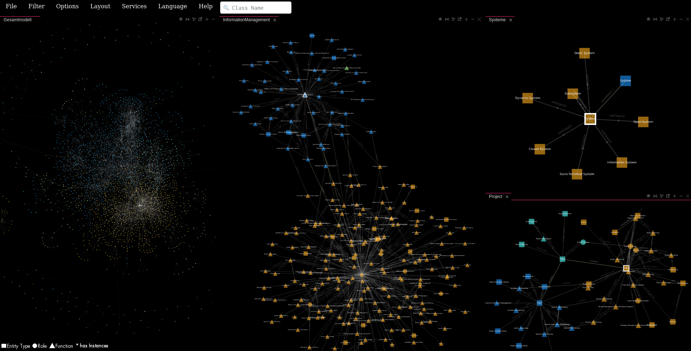

SNIK Graph Troubleshooting

"Javascript is off."
SNIK Graph does not work without JavaScript and uses some features of ECMAScript 6.
Please ensure that JavaScript is enabled and that your browser is up to date.
The book excerpts are not accessible
Unfortunately, the textbooks are not open source and are only accessible for IMISE members.
The book excerpts are not openened at the right page
If the book is opened at page 1, you need to make sure that the file is not downloaded but opened directly in the browser.
If the book is openened at a later, but incorrect, page, please submit an ontology ticket.
Mobile
SNIK Graph is not optimized for Smartphones and Tablets, as such both the controls and performance may be unsatisfactory.
Feel free to contribute if you want to improve that.
Submit a Bug Report
If you encounter a technical problems that is not adressed here,
please view the list of known issues
and if it is not listed there, submit a bug report.
Disclaimer
SNIK Graph is a research prototype developed part-time by a single researcher who is not a JavaScript expert and as such does not undergo the extensive testing and development of big projects.
As such, contributions and suggestions are always appreciated,
However, HTML 5 and ECMAScript 6 are used by choice and we will not approve changes that compromise the clarity or size of the source code by adding compatibility layers for outdated browser versions.